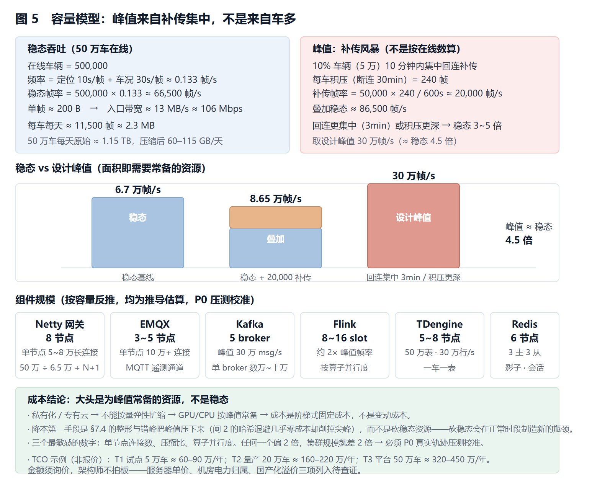
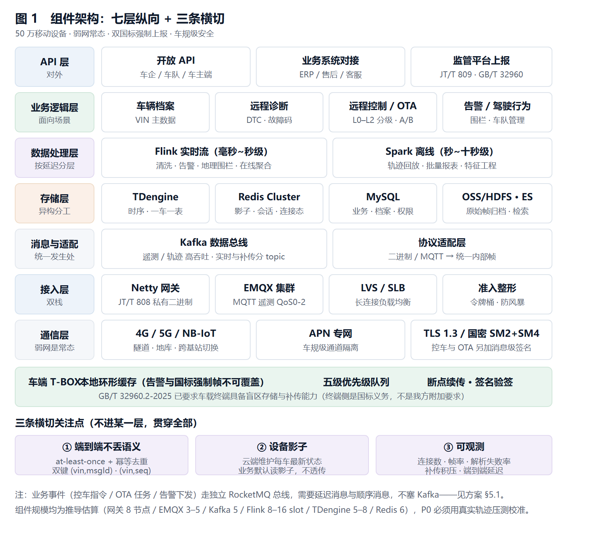
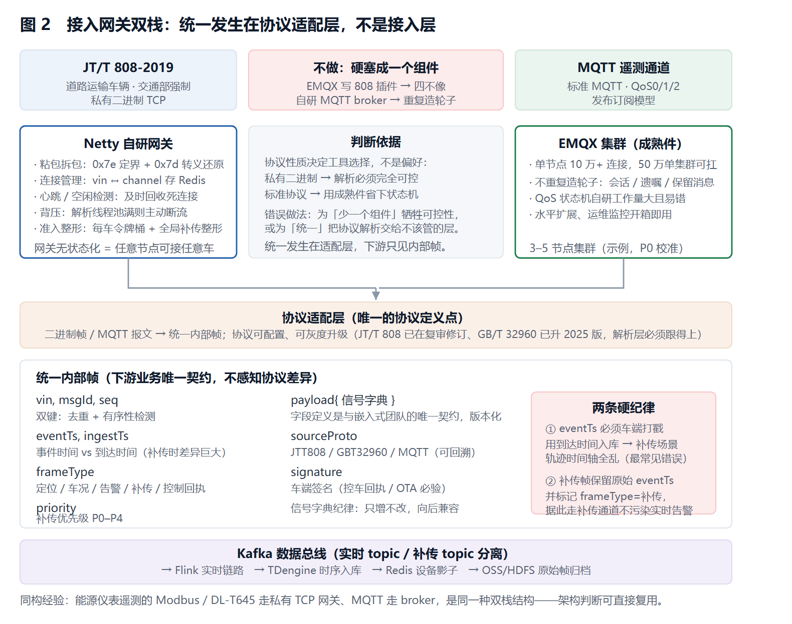
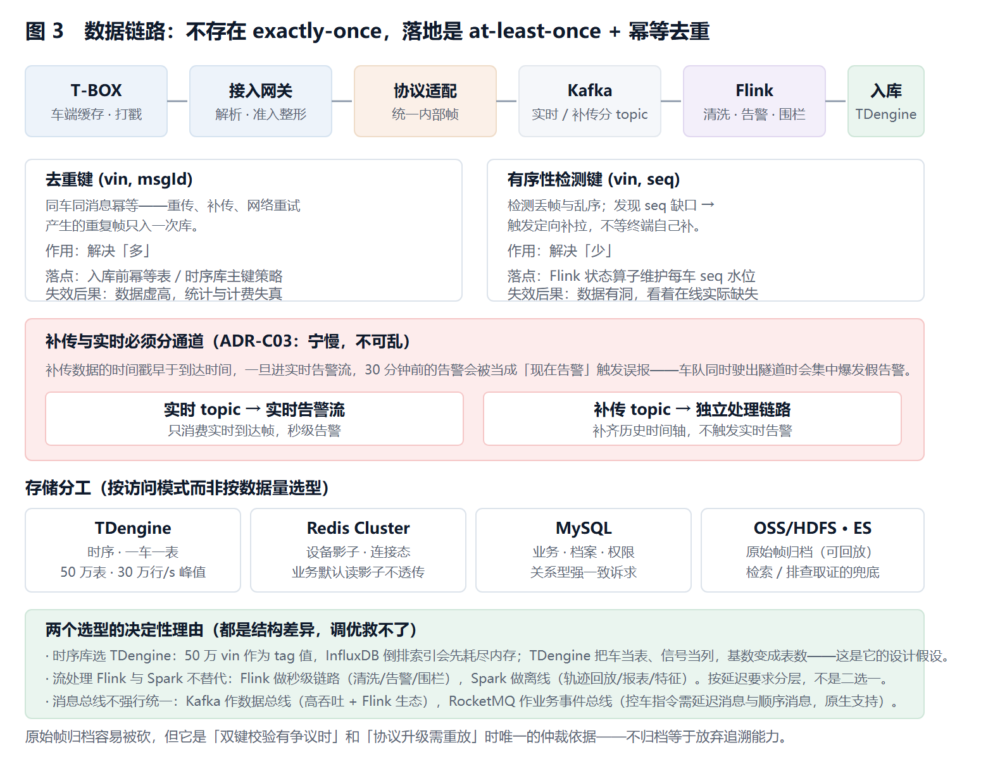
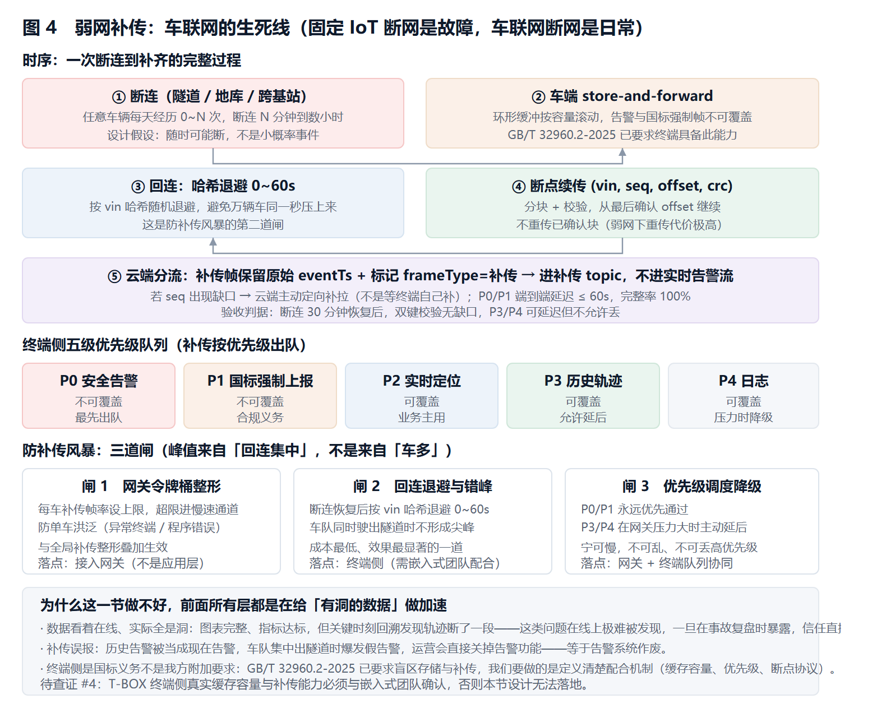
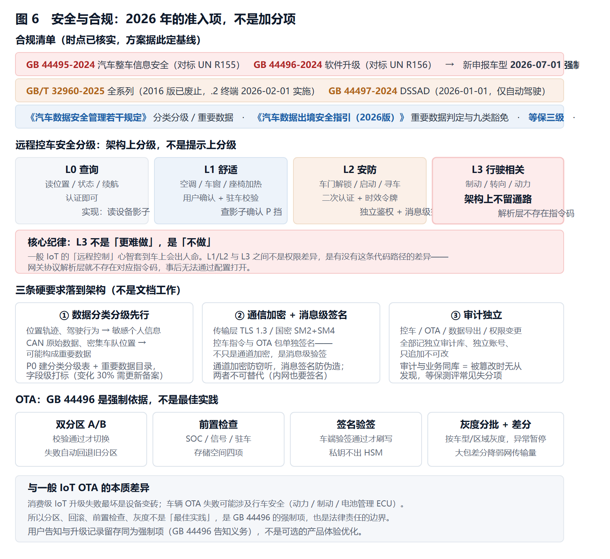
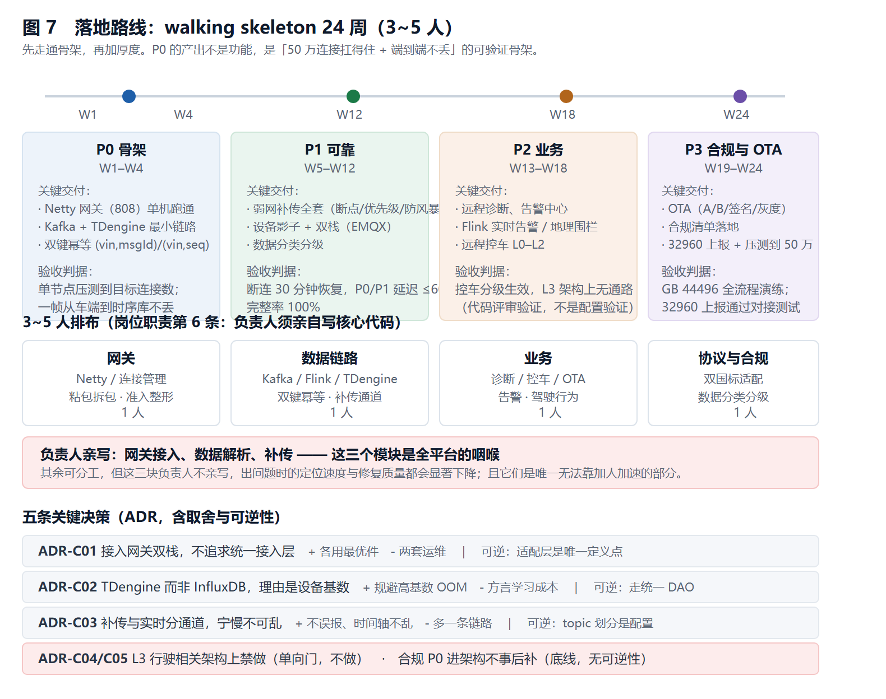

定位：一份可落地的工程方案，不是概念介绍。 方法论主干来自既往多份平台方案的共同沉淀——端到端不丢语义、弱网 store-and-forward、时序选型、ADR、SLO/错误预算、walking skeleton、FMEA、TCO 三档、待查证"不编不猜"。本文只写车联网的差异化与关键决策，通用机制不重复展开。 阅读顺序建议：§1 结论 → §2 容量 → §4 接入网关 → §7 弱网补传 → §8 安全合规 → §10 落地路线，其余按需查阅。
§0 假设与口径（先看这节，否则后面的数字没意义）
| 项 | 取值 | 依据 / 说明 |
|---|---|---|
| 目标在线规模 | 50 万辆 T-BOX（"数十万级"取上限） | 按行业常见"数十万级"规模取上限，结构对 10 万 / 100 万同样成立 |
| 峰值并发连接 | = 在线数 50 万 | 长连接在线即峰值连接，移动设备无"同时率"折扣 |
| 车型结构 | 商用车（JT/T 808 强制）+ 新能源乘用车（GB/T 32960 强制上报）混合 | 决定双协议栈 |
| 数据频率 | 定位 10 s/帧，车况/CAN 30 s/帧 | GB/T 32960.3-2025 实时数据上报区间 |
| 网络假设 | 弱网/断连是常态不是异常：隧道、地库、偏远路段、跨基站切换 | 任意车辆每天经历 0~N 次断连；这条决定 §7 是生死线 |
| 部署形态 | 私有化 / 专有云，业务数据不出域，排除公有云弹性扩缩 | 成本是阶梯式固定成本，不是变动成本 |
| 合规基线 | 等保三级 + GB 44495/44496（2026 强制）+ 汽车数据规定 + 出境指引（2026 版） | §8 展开 |
一句话口径：这是一个"50 万移动设备、弱网常态、双国标强制上报、车规级安全"的遥测与控制平台，不是"多接了几个传感器的普通 IoT"。
§1 结论先行（五条判断）
- 接入网关必须双栈，不为"统一"硬塞一个组件。 JT/T 808 是私有二进制 TCP 协议，EMQX 不支持、也不该让它支持；MQTT 遥测通道用 EMQX 成熟件。自研与成熟件各守一段，中间用协议适配层解耦。
- 弱网补传是生死线，不是附加功能。 移动性断连是常态，断点续传 + 优先级调度 + 防补传风暴决定数据完整性 SLO 能否达成——做不好，数据是"看着在线、实际全是洞"。
- 时序库选型的决定性因素是设备基数。 50 万车 × 数百信号，InfluxDB 的 tag 高基数会 OOM；TDengine"一个设备一张表"模型天然匹配。这是结构差异，性能调优弥补不了。
- 远程控车按安全分级，L3（行驶相关）在架构上不留通路。 车辆下行控制与一般 IoT 下发指令的安全等级完全不同；车门解锁和制动相关指令之间，隔着的是人身安全和 GB 44496 的强制约束。
- 合规是 2026 年的准入项，不是加分项。 GB 44495/44496 已强制（新申报车型 2026-07-01）、GB/T 32960 已升 2025 版、出境指引已出 2026 版。合规能力必须 P0 进架构，事后补的成本是重构级的。
§2 容量模型：先算数据量，再画架构
这是最容易被跳过去、也最容易返工的一步。先把账算清。
2.1 稳态吞吐
在线车辆 = 500,000
上报频率 = 定位 10s/帧 + 车况 30s/帧
≈ 每车 0.133 帧/s
稳态帧率 = 500,000 × 0.133 ≈ 66,500 帧/s
单帧大小 ≈ 200 B（JT/T 808 定位帧约 40B，GB/T 32960 实时帧含 CAN 打包约数百 B，取均值）
稳态入口带宽 = 66,500 × 200 B ≈ 13 MB/s ≈ 106 Mbps
2.2 峰值：补传风暴（不是按在线数算，是按"回连集中"算）
移动设备断连后集中回连是常态——车队同时驶出隧道、早晚高峰、基站恢复。估算：
假设 10% 车辆（5 万辆）在 10 分钟内集中回连补传
每车积压数据（断连 30 分钟，0.133 帧/s × 1800s）≈ 240 帧
补传帧率 = 50,000 × 240 / 600s ≈ 20,000 帧/s（补传部分）
叠加稳态 ≈ 66,500 + 20,000 ≈ 86,500 帧/s
若回连更集中（3 分钟）或积压更深，峰值可达稳态 3~5 倍 → 取设计峰值 30 万帧/s
结论：平台按稳态 6.7 万帧/s、峰值 30 万帧/s 设计。峰值不是来自"更多车"，是来自"补传集中"——这条决定网关必须做准入与整形，见 §7.4。
2.3 存储账
每车每天帧数 = 86,400s × 0.133 ≈ 11,500 帧
每车每天原始 = 11,500 × 200 B ≈ 2.3 MB
50 万车每天原始 = 500,000 × 2.3 MB ≈ 1.15 TB/天
TDengine 列存压缩（时序数据典型 10:1 ~ 20:1）→ 60 ~ 115 GB/天
热数据保留 90 天 ≈ 5.4 ~ 10.4 TB
2.4 组件规模（按容量反推）
| 组件 | 规模推导 | 结果（示例，P0 压测校准） |
|---|---|---|
| Netty 接入网关 | 单节点稳定 5~8 万长连接（内存 + GC + 解析 CPU 受限，非端口数） | 50 万 ÷ 6.5 万 ≈ 8 节点 + N+1 冗余 |
| EMQX 集群 | 单节点 10 万+ MQTT 连接 | 3~5 节点集群 |
| Kafka | 单 broker 数万~十万 msg/s | 峰值 30 万 msg/s → 5 broker |
| Flink | 按算子并行度，约 2× 峰值帧率处理 | 8~16 task slot 起步 |
| TDengine | 50 万表（一车一表）+ 写入 30 万行/s 峰值 | 5~8 数据节点集群 |
| Redis Cluster | 50 万连接态 + 设备影子 + 会话 | 6 节点（3 主 3 从） |
与 AIoT v3 §2.3 同一纪律：这组数字是推导估算，P0 必须用真实轨迹压测校准。单节点连接数、压缩比、算子并行度三个数最敏感，任何一个偏 2 倍，集群规模就差 2 倍。

§3 总体架构（六层）
┌─────────────────────────────────────────────────────────┐
│ API 层 开放 API / 业务系统对接 / 国家监管平台上报对接 │
├─────────────────────────────────────────────────────────┤
│ 业务逻辑层 车辆档案 / 远程诊断 / 远程控制 / OTA / 告警中心 │
│ / 驾驶行为 / 车队管理 / 设备影子 │
├─────────────────────────────────────────────────────────┤
│ 数据处理层 Flink 实时流（清洗/告警/聚合/地理围栏） │
│ Spark 离线（轨迹回放/报表/特征） │
├─────────────────────────────────────────────────────────┤
│ 存储层 TDengine(时序) Redis(影子/会话/热) │
│ MySQL(业务) OSS/HDFS(原始帧归档) ES(检索) │
├─────────────────────────────────────────────────────────┤
│ 数据处理层 Kafka(消息总线) 协议适配层(二进制↔统一帧) │
├─────────────────────────────────────────────────────────┤
│ 接入层 Netty 网关(JT/T 808) EMQX 集群(MQTT 遥测) │
│ LVS/SLB 负载均衡 连接管理/粘包拆包/准入整形 │
├─────────────────────────────────────────────────────────┤
│ 通信层 4G/5G/NB-IoT APN 专网 TLS/SM4 加密通道 │
└─────────────────────────────────────────────────────────┘
↑ ↑
T-BOX（车端） 边缘能力
本地缓存/断点续传/ GB/T 32960 终端侧
优先级队列/签名验签 存储与补传（国标要求）
三条横切关注点（不进某一层，贯穿全部）：
- 端到端不丢语义：at-least-once + 幂等去重，双键
(vin, msgId)去重 +(vin, seq)有序性检测（继承 AIoT v3，见 §7.3）。 - 设备影子：云端维护每车最新状态，业务层读影子不等实时上报（继承 AIoT v3）。
- 可观测：连接数 / 帧率 / 解析失败率 / 补传积压 / 端到端延迟，全部进指标（§11 SLO）。

§4 接入网关：双栈是结论，不是妥协
行业里常见的说法是"用 Netty/EMQX 做接入"。这里的关键决策是：Netty 和 EMQX 不是二选一，是各司其职。
4.1 为什么不能统一成一个
| 通道 | 协议性质 | 候选 | 结论 |
|---|---|---|---|
| JT/T 808 控制/定位通道 | 私有二进制 TCP，粘包拆包、转义（0x7e）、自定义帧头 | EMQX | 不支持，也不该让它支持——硬塞协议插件等于把 MQTT broker 改成四不像 |
| Netty 自研 | 选定：协议解析完全可控，粘包/转义/校验位自己掌握 | ||
| MQTT 遥测通道 | 标准 MQTT，QoS0/1/2，发布订阅 | Netty 自研 MQTT broker | 重复造轮子——MQTT 的会话、遗嘱、保留消息、QoS 状态机工作量大且容易错 |
| EMQX | 选定：成熟、水平扩展、50 万连接单集群可扛 |
判断：接入网关 = Netty 自研（JT/T 808）+ EMQX（MQTT 遥测）双栈，两者在协议适配层收敛为统一内部帧格式后进入 Kafka。统一发生在适配层，不是发生在接入层。
这是给用户同构经验的位置：能源仪表遥测里 Modbus/DL-T645 走私有 TCP 网关、MQTT 走 broker，是同一种双栈结构。架构判断可直接复用。
4.2 Netty 网关的工程要点（JT/T 808）
- 粘包拆包：自定义
DelimiterBasedFrameDecoder（0x7e 定界）+ 转义还原（0x7d 0x02 → 0x7e）。 - 连接管理：
vin ↔ channel映射放 Redis Cluster（网关无状态化，任意节点可接任意车——这是水平扩展的前提）。 - 心跳与超时：终端心跳 + 网关空闲检测（
IdleStateHandler），死连接及时回收，否则 50 万连接里一半是僵尸。 - 背压：解析线程池满 → 主动断流 + 回压，不让慢消费拖垮整个 EventLoop。
- 准入整形：令牌桶限每车帧率 + 全局补传整形（§7.4），防单车洪泛与补传风暴。
4.3 设备影子与连接态
每车在 Redis 维护 {连接态, 最后位置, 最后车况, 最后心跳时间, 当前固件版本}。业务层默认读影子，只有诊断/控车等需要实时的场景才透传。否则 50 万车的状态查询会把接入层打穿。

§5 数据链路：三个选型的权衡与决策
5.1 消息队列：Kafka vs RocketMQ
| 维度 | Kafka | RocketMQ |
|---|---|---|
| 吞吐 | 高（百万级 msg/s 集群） | 高，但同规模略低 |
| 时序数据管道适配 | 优（日志/遥测标准件） | 一般 |
| 延迟消息/顺序消息 | 弱（需自实现） | 强（原生延迟/顺序） |
| 事务消息 | 有 | 更成熟 |
| 生态（Flink connector） | 一等公民 | 支持但非首选 |
决策：Kafka 作主数据总线（遥测/轨迹，高吞吐、与 Flink 生态最契合）；RocketMQ 作业务事件总线（控车指令、OTA 任务、告警——需要延迟消息与顺序消息）。
不为"少一个组件"把业务事件也塞 Kafka——控车指令需要"驻车后才下发"的延迟与顺序保证，RocketMQ 原生支持，Kafka 要自研，得不偿失。
5.2 时序库：TDengine vs InfluxDB（结构性差异，不是调优差异）
| 维度 | TDengine | InfluxDB |
|---|---|---|
| 数据模型 | 一个设备一张表（超级表统一管理） | tag 索引（measurement + tag set） |
| 50 万设备基数 | 天然匹配（表数多但元数据轻） | tag 高基数 → 内存膨胀直至 OOM |
| 写入吞吐（列存） | 高 | 高（但高基数下降崖） |
| 车载场景适配 | 内置降采样、滑动窗口、缓存 | 需配 Continuous Query |
| 国产化/政企 | 国产，政企采购友好 | 国外，国产化替代清单常要求换 |
决策：TDengine。 决定性理由是设备基数——50 万 vin 作为 tag 值，InfluxDB 的倒排索引会先耗尽内存，这是结构问题；TDengine 把车当表、信号当列，基数变成表数（它的设计假设）。
与 AIoT v3 时序选型同一结论、同一理由。这是"一设备一表 vs tag 高基数"的结构性差异，不是跑分能抹平的。
5.3 流处理：Flink vs Spark Streaming
| 维度 | Flink | Spark Streaming |
|---|---|---|
| 模型 | 真流（逐条） | 微批 |
| 延迟 | 毫秒~秒级 | 秒~十秒级 |
| 实时告警/地理围栏 | 适配 | 延迟偏高 |
| Exactly-once 状态 | 原生 | 依赖 checkpoint |
决策：Flink 做实时链路（清洗、告警、地理围栏、在线聚合——这些要秒级）；Spark 做离线链路（轨迹回放、批量报表、特征工程——吞吐优先、延迟不敏感）。两者不替代，按延迟要求分层。

(vin,msgId) / (vin,seq) 解决「多」与「少」，补传与实时分通道，存储按访问模式分工。§6 协议与数据规范：双国标适配
6.1 两套强制协议的分工
| 协议 | 适用 | 性质 | 本平台的角色 |
|---|---|---|---|
| JT/T 808-2019（+ JT/T 809 平台间） | 道路运输车辆（两客一危、货运、网约车） | 交通部行业标准，强制 | T-BOX ↔ 本平台（808）；本平台 ↔ 上级监管平台（809） |
| GB/T 32960-2025（全系列） | 新能源汽车 | 国标，强制上报国家监管平台 | T-BOX → 企业平台（本）→ 地方/国家平台逐级上报 |
时效提醒：GB/T 32960 已整体升级 2025 版（.3 通信协议 2025-11-01 实施、.2 车载终端 2026-02-01 实施），2016 版已废止。协议字段与加密要求有变化，方案以 2025 版为基线。JT/T 808 现行 2019 版，但 2025-09 复审结论"修订"——两个标准都要跟踪修订动态，协议解析层必须可配置、可灰度升级。
6.2 统一内部帧（协议适配层的产出）
双协议进入平台后，适配层统一为内部规范帧，下游业务只面向内部帧，不感知协议差异：
内部帧 = {
vin, msgId, seq, // 双键：去重 + 有序
eventTs, ingestTs, // 事件时间 vs 到达时间（补传时差异巨大）
frameType, // 定位/车况/告警/补传/控制回执
priority, // 补传优先级（§7.2）
payload{ 信号字典 }, // 字段定义见下
sourceProto, // JTT808 / GBT32960 / MQTT
signature // 车端签名（控车回执/OTA 必验）
}
6.3 字段定义（与嵌入式团队的接口契约）
与嵌入式团队配合，明确数据采集范围、字段定义、上报频率，落地为一张信号字典表，作为云端与嵌入式团队的唯一契约：
| 字段 | 类型 | 单位 | 频率 | 必填 | 来源 | 说明 |
|---|---|---|---|---|---|---|
| vin | char(17) | — | 每帧 | 是 | T-BOX | 车辆唯一标识 |
| eventTs | uint64 | ms | 每帧 | 是 | 车端时钟 | 必须车端打时间戳，云端到达时间不能替代（补传） |
| 经纬度/速度/方向 | 按 808 | — | 10s | 是 | GNSS | 定位三要素 |
| SOC/电压/电流 | float | %/V/A | 30s | 新能源必填 | BMS | GB/T 32960 动力蓄电池包 |
| DTC 故障码 | list | — | 事件触发 | 否 | 各 ECU | 远程诊断核心 |
| 里程/挡位/转速 | — | — | 30s | 否 | VCU | — |
两条纪律：
- eventTs 必须由车端打戳。补传场景下数据到达时间晚于事件发生时间，用到达时间做时序入库会把轨迹时间轴打乱——这是弱网平台最容易犯的错。
- 信号字典版本化，云端与终端按版本协商，新增信号向后兼容（只增不改）。
§7 弱网补传：本平台的生死线
弱网补传在架构上单列一节：这一节做不好，前面所有层都是在给"有洞的数据"做加速。
7.1 为什么弱网是常态
固定 IoT 的断网是故障；车联网的断网是日常——隧道、地库、偏远路段、山区、跨基站切换、信号遮挡。设计假设必须是"任意车辆随时可能断连 N 分钟到数小时"，而不是"断网是小概率事件"。
7.2 终端侧：store-and-forward（国标已要求，我们要把它做对）
GB/T 32960.2-2025 已要求车载终端具备盲区数据存储与补传能力。我们要做的是定义清楚终端侧的配合机制（终端需要配合的缓存、重连退避、优先级与去重）：
| 机制 | 设计 |
|---|---|
| 本地缓存 | T-BOX Flash/SD 环形缓冲，按容量上限滚动；告警与国标强制帧标记为不可覆盖 |
| 优先级队列 | 分五级：P0 安全告警 > P1 国标强制上报 > P2 实时定位 > P3 历史轨迹 > P4 日志；补传按优先级出队 |
| 断点续传 | 分块 + 偏移量 + 校验；每块带 (vin, seq, offset, crc)，断点续传从最后确认 offset 继续，不重传已确认块 |
| 补传标记 | 补传帧 frameType=补传 且保留原始 eventTs（云端据此走补传通道，不污染实时告警） |
7.3 端到端不丢语义（继承 AIoT v3，车联网适配）
不存在真正的 exactly-once，落地是 at-least-once + 幂等去重：
- 去重键
(vin, msgId)：同车同消息幂等，重复帧（重传/补传/网络重试）只入一次。 - 有序性检测键
(vin, seq)：检测丢帧与乱序；发现 seq 缺口 → 触发定向补拉（不是等终端自己补）。 - 补传与实时分通道：补传数据进 Kafka 独立 topic，不进入实时告警流——否则 30 分钟前的告警会被当成"现在告警"触发误报。
7.4 防补传风暴（§2.2 的峰值在这落地）
补传风暴的根因是"断连车辆集中回连 + 每车都背着积压数据"。三道闸：
- 网关令牌桶整形：每车补传帧率设上限，超限进慢速通道（继承 AIoT v3"令牌桶放网关"）。
- 回连退避与错峰：断连恢复后，终端按
vin哈希随机退避 0~60s 再发起补传，避免万辆车同一秒压上来。 - 优先级调度：P0/P1 永远优先，P3/P4 在网关压力大时主动降级延后——宁可慢，不可乱、不可丢高优先级。
这一节的验收指标：断连 30 分钟恢复后，P0/P1 数据端到端延迟 ≤ 60s，完整率 100%（双键校验无缺口），P3/P4 可延迟但不允许丢。

§8 安全与合规：2026 年的准入项，不是加分项
8.1 合规清单（2026-11 时点核实）
| 标准/法规 | 内容 | 强制时点 | 对本平台的约束 |
|---|---|---|---|
| GB 44495-2024《汽车整车信息安全技术要求》 | 信息安全管理体系 + 外部连接/通信/软件升级/数据安全（对标 UN R155） | 新申报车型 2026-07-01 | 身份鉴别、访问控制、通信防护、入侵检测 |
| GB 44496-2024《汽车软件升级通用技术要求》 | OTA 全流程：告知、版本读取、安全保护、先决条件、电量保障、失败处理（对标 UN R156） | 新申报车型 2026-07-01 | §9 OTA 全部设计依据 |
| GB 44497-2024《自动驾驶数据记录系统 DSSAD》 | 数据记录/存储/读取/信息安全 | 2026-01-01（自动驾驶车辆） | 仅当涉及自动驾驶功能 |
| GB/T 32960-2025 全系列 | 新能源远程监控 + 强制上报 | 已实施（.2 终端 2026-02-01） | §6 协议、§7 终端缓存 |
| 《汽车数据安全管理若干规定（试行）》 | 数据分类分级、重要数据、个人信息 | 2021 起 | 数据分类分级 + 重要数据目录 |
| 《汽车数据出境安全指引（2026版）》 | 重要数据判定、三种出境管理方式、九类豁免 | 2026 | §8.3 数据出境 |
| 等保三级（GB/T 22239） | 通用安全基线 | — | 身份鉴别、审计、密钥管理 |
| 个保法 | 车主个人信息 | — | 位置轨迹属敏感个人信息，需单独同意 |
8.2 三条硬要求落到架构
- 数据分类分级先行：位置轨迹、驾驶行为属敏感个人信息；车辆 CAN 原始数据、地理围栏内密集车队位置可能构成重要数据。P0 就要建数据分类分级表与重要数据目录（《出境指引》要求识别备案，变化 30% 以上三个月内更新备案）。这不是文档工作，是数据模型的字段级打标。
- 通信加密：传输层 TLS 1.3 / 国密 SM2+SM4（政企与等保倾向国密）；控车指令与 OTA 包必须单独签名（不只是通道加密，是消息级签名验签）。
- 审计独立：控车、OTA、数据导出、权限变更，全部记独立审计库、只追加、独立账号。
8.3 数据出境（若有出海/外资背景）
《出境指引 2026 版》：默认重要数据境内存储；OTA 升级软件包源代码、安全漏洞/安全事件相关重要数据可免于申报出境安全评估（但须事先向主管部门报告/备案）。架构上：出境通道单独成网关，重要数据出境走审批 + 留痕，不与业务数据混流。

§9 远程控车与 OTA：车规级与一般 IoT 的本质差异
9.1 远程控车安全分级（架构上分级，不是提示上分级）
| 级别 | 动作 | 安全要求 | 实现 |
|---|---|---|---|
| L0 查询 | 读位置/状态/续航 | 认证即可 | 读设备影子 |
| L1 舒适 | 空调、车窗、座椅加热 | 用户确认 + 车辆驻车状态校验 | 下发前查影子确认 P 挡 |
| L2 安防 | 车门解锁、启动、寻车 | 二次认证（生物特征/PIN）+ 地理围栏 + 一次性时效令牌 + 消息级签名 | 独立鉴权服务，令牌一次性、短时效 |
| L3 行驶相关 | 制动、转向、动力 | 架构上不留通路 | 禁做——平台不暴露任何影响行驶安全的下行指令 |
核心纪律：L3 不是"更难做"，是"不做"。一般 IoT 的"远程控制"心智直接套到车上会出人命。L1/L2 与 L3 之间不是权限差异，是有没有这条代码路径的差异——L3 在网关协议解析层就不存在对应指令码。
9.2 OTA（GB 44496 是强制依据）
| 机制 | 设计 | 依据 |
|---|---|---|
| 双分区 A/B | 新固件写备用分区，校验通过后切换，失败自动回退旧分区 | GB 44496 失败处理 |
| 升级前置检查 | 电量（SOC 阈值）、信号强度、驻车状态、存储空间 | GB 44496 先决条件 + 电量保障 |
| 签名验签 | 升级包 SM2/RSA 签名，车端验签通过才允许刷写；私钥不出 HSM | GB 44496 安全保护 |
| 灰度分批 | 按车型/区域/批次灰度，首批小流量观察，异常自动暂停 | 控制爆炸半径 |
| 用户告知 | 升级前告知 + 升级记录留存（可追溯） | GB 44496 告知义务 |
| 差分升级 | 大包差分，降低弱网传输量 | 与 §7 弱网协同 |
与一般 IoT OTA 的差异：消费级 IoT 升级失败最坏是设备变砖；车辆 OTA 失败可能涉及行车安全（动力、制动、电池管理 ECU）。所以分区、回滚、前置检查、灰度不是"最佳实践"，是 GB 44496 的强制项，也是法律责任的边界。
§10 落地路线（walking skeleton，3~5 人，约 24 周）
先走通骨架，再加厚度。P0 的产出不是功能，是"50 万连接扛得住 + 端到端不丢"的可验证骨架。
| 阶段 | 周期 | 关键交付 | 验收判据 |
|---|---|---|---|
| P0 骨架 | W1–W4 | Netty 网关（808）单机跑通 + Kafka + TDengine 最小链路 + 双键幂等 | 单节点压测到目标连接数；端到端一帧从车端到时序库不丢 |
| P1 可靠 | W5–W12 | 弱网补传全套（断点续传/优先级/防风暴）+ 设备影子 + 双栈（EMQX）+ 数据分类分级 | 断连 30 分钟恢复，P0/P1 延迟 ≤60s、完整率 100% |
| P2 业务 | W13–W18 | 远程诊断、告警中心、Flink 实时告警/围栏、远程控车 L0–L2 | 控车分级生效，L3 架构上无通路（代码评审验证） |
| P3 合规与 OTA | W19–W24 | OTA（A/B/签名/灰度）+ 合规清单落地 + GB/T 32960 上报对接 + 压测到 50 万 | GB 44496 全流程演练；32960 上报通过对接测试 |
3~5 人的排布：1 人网关（Netty/连接）、1 人数据链路（Kafka/Flink/TDengine）、1 人业务（诊断/控车/OTA）、1 人协议与合规（双国标/数据分类）、负责人（架构 + 核心代码 + 跨团队）。负责人必须亲手写代码——网关接入、数据解析、补传这三个模块不能外包，它们是全平台的咽喉。

§11 ADR（关键决策记录）
ADR-C01：接入网关双栈（Netty + EMQX），不追求统一接入层
Context：JT/T 808 私有二进制 TCP 与 MQTT 标准协议并存。Decision：Netty 自研处理 808，EMQX 处理 MQTT，统一发生在协议适配层而非接入层。Consequences：+ 各自用最优件、协议解析可控；- 两套接入栈的运维与监控。Reversibility：适配层是唯一定义点，将来换掉任一栈不影响下游。
ADR-C02：TDengine 而非 InfluxDB，理由是设备基数
Context：50 万 vin × 数百信号。Decision：TDengine 一设备一表。Consequences：+ 规避 tag 高基数 OOM、国产化友好；- 生态与 SQL 方言有学习成本。Reversibility：时序访问走统一 DAO，换库只改 DAO。
ADR-C03：补传与实时分通道，宁慢不乱
Context：补传数据时间戳早于到达时间，进实时流会触发误报。Decision：补传独立 Kafka topic + 独立处理链路，实时告警只消费实时流。Consequences：+ 不误报、时间轴不乱；- 多一条链路。Reversibility：topic 划分是配置，可合并但需重放验证。
ADR-C04：远程控车 L3 架构上禁做
Context：车辆下行控制的安全等级远超一般 IoT。Decision：L3（制动/转向/动力）在协议解析层不实现对应指令码，L1/L2 走分级鉴权。Consequences：+ 安全责任边界清晰；- 放弃部分"远程驾驶"类卖点。Reversibility：单向门，不做。
ADR-C05：合规 P0 进架构，不事后补
Context：GB 44495/44496 已强制、32960 已升 2025 版、出境指引已出 2026 版。Decision：数据分类分级、重要数据目录、控车分级、OTA 安全在 P0/P3 排期内落地。Consequences：+ 不做重构级返工；- P0 交付物里多了合规工件。Reversibility：无（这是底线）。
§12 TCO（示例口径，非报价）
私有化/专有云 + 固定成本结构。示例假设：服务器单价、3 年折旧、PUE 1.4、电价 0.8 元/kWh、人力 30 万/人年——金额须询价，架构师不拍板。
| 档位 | 在线规模 | 网关+计算+存储节点 | 年运行成本（示例） |
|---|---|---|---|
| T1 试点 | 5 万车 | ~12 节点 | ≈ 60–90 万 |
| T2 量产 | 20 万车 | ~35 节点 | ≈ 160–220 万 |
| T3 平台 | 50 万车 | ~70 节点 | ≈ 320–450 万 |
成本大头是为峰值（补传风暴）常备的计算与存储，不是稳态。降本第一手段是 §7.4 的整形与错峰把峰值压下来，而不是砍稳态资源。
§13 不做清单
| 不做 | 原因 |
|---|---|
| 用 EMQX 硬塞 JT/T 808 协议插件 | 把 MQTT broker 改成四不像，协议解析失控 |
| 自研 MQTT broker | 会话/遗嘱/保留消息/QoS 状态机重复造轮子且易错 |
| 用 InfluxDB 扛 50 万设备基数 | tag 高基数 OOM 是结构问题，调优救不了 |
| 远程控车开放 L3（行驶相关） | 人身安全 + GB 44496，架构上不留通路 |
| 补传数据进实时告警流 | 历史告警被当成"现在告警"触发误报 |
| 用云端到达时间替代车端 eventTs | 补传场景时间轴全乱 |
| 合规事后补 | GB 44495/44496 已强制，事后补是重构级成本 |
| 把"通过 XX 认证"写在没拿证前 | 只能写"对标 GB 44495/44496 评估维度"，绝不写"已通过" |
§14 待查证清单（不编、不猜）
| # | 待查证 | 不定什么就不能定 |
|---|---|---|
| 1 | 目标车型是纯商用（808）还是含新能源乘用（32960），比例 | 协议栈投入分配 |
| 2 | 单 Netty 节点真实连接数上限（P0 压测） | 网关集群规模 |
| 3 | TDengine 在本数据的实测压缩比 | 存储成本与节点数 |
| 4 | T-BOX 终端侧缓存容量与补传能力（与嵌入式团队确认） | §7 终端机制能否落地 |
| 5 | 是否需对接上级监管平台（JT/T 809）与国家新能源平台（32960） | 上报链路工作量 |
| 6 | 是否涉及自动驾驶功能（GB 44497 DSSAD） | 是否加 DSSAD 链路 |
| 7 | 是否有数据出境需求（出海/外资） | §8.3 出境网关是否建设 |
| 8 | 远程控车业务范围（客户要 L1/L2 到哪一级） | 鉴权与合规深度 |
| 9 | 等保目标级别与是否要求密评 | 国密投入时点 |
| 10 | 中间件是否要求国产化替代 | Kafka/Redis/ES 选型边界 |